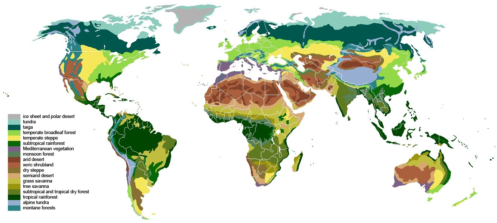
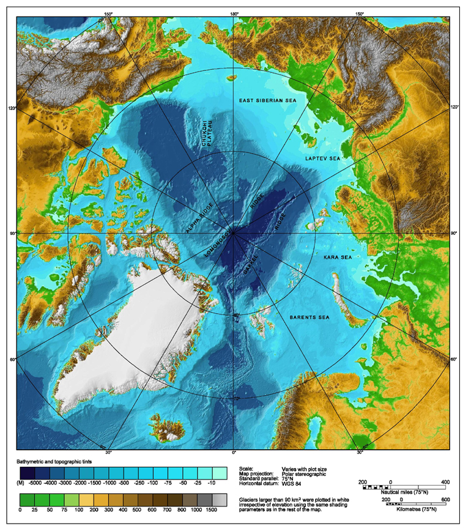
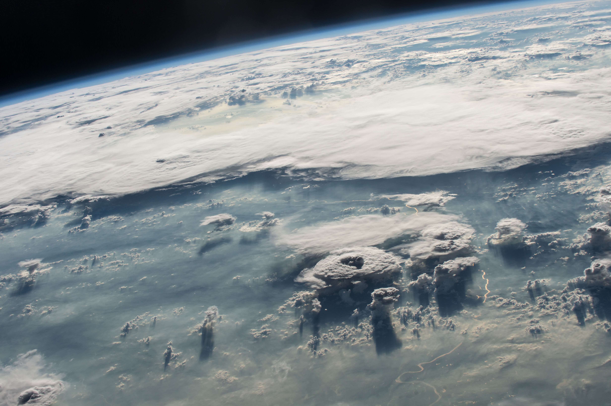
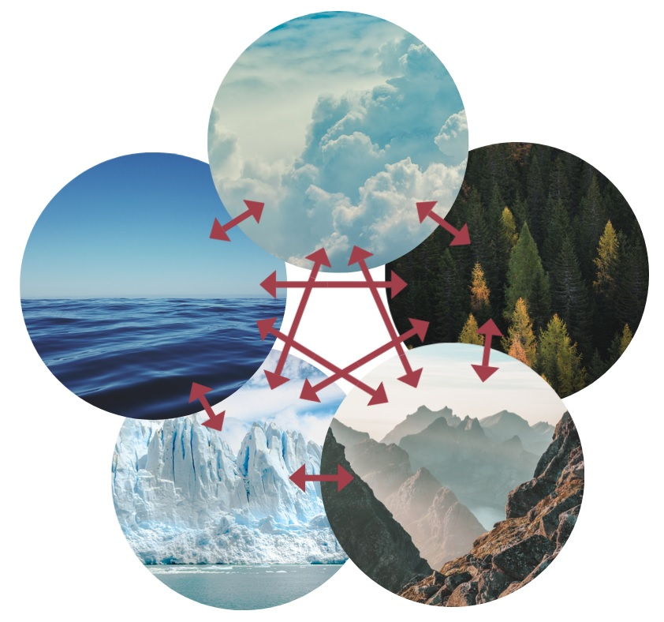
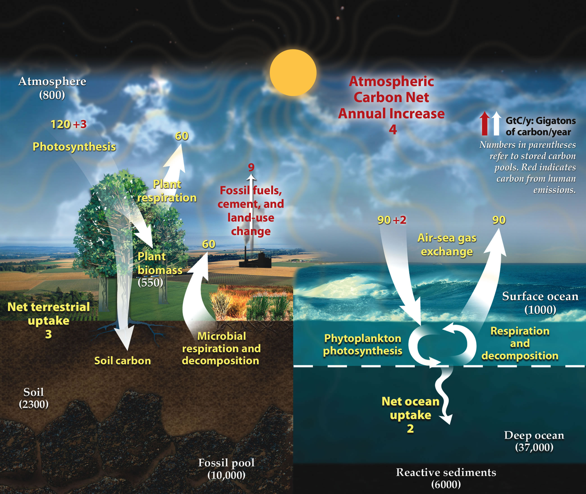
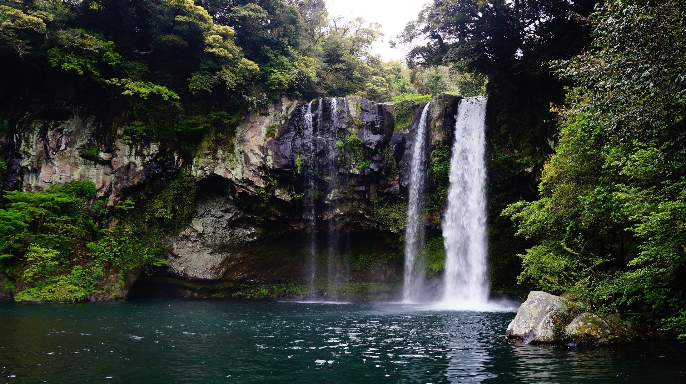
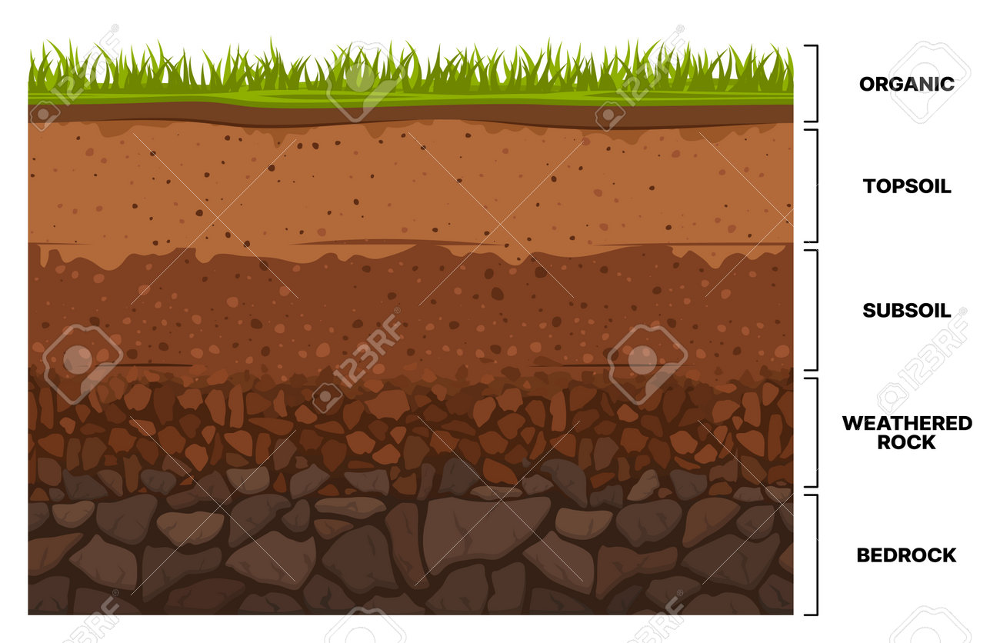
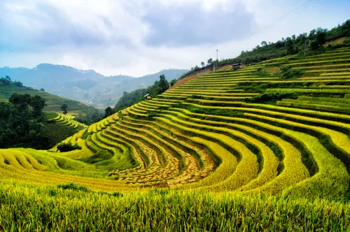
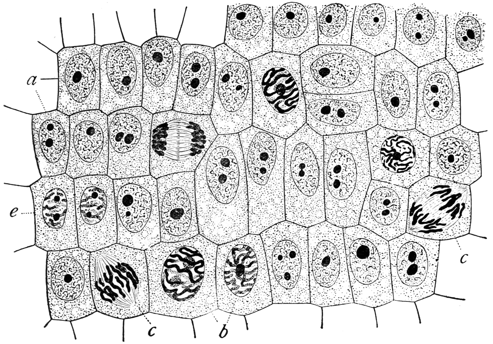
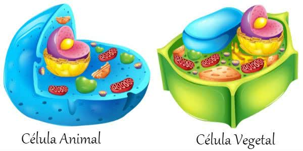

Terra
Agua na terra
Um oceano é um grande corpo de água salina e um componente da hidrosfera.
Aproximadamente 71% da superfície da Terra
(uma área de 361 milhões de quilômetros quadrados)
é coberta pelo oceano, um contínuo corpo de água que
é geralmente dividido em vários oceanos principais e
mares menores. Mais da metade dessa área está numa profundidade
maior que três mil metros. A salinidade oceânica
média é por volta de 35 partes por milhar (ppt) (3,5%),
e praticamente toda a água do mar tem uma salinidade
de 30 a 38 ppt. Apesar de geralmente reconhecidos como
vários oceanos 'separados', essas águas formam um corpo global
interconectado de água salina por vezes chamado de Oceano Global.
Esse conceito de oceano global como um corpo contínuo de água com um intercâmbio
relativamente livre entre suas partes é de fundamental
importância para a oceanografia. As principais divisões
oceânicas são definidas em parte pelos continentes,
vários arquipélagos, e outros critérios: essas divisões são
(em ordem decrescente de tamanho) o Oceano Pacífico, o Oceano Atlântico,
o Oceano Índico, o Oceano Antártico e o Oceano Ártico.
Atmosfera da terra

A atmosfera da Terra serve como um fator principal para sustentar o ecossistema planetário.
A fina camada de gases que envolve a Terra é mantida no lugar pela gravidade do planeta.
O ar seco consiste em 78% de nitrogênio, 21% oxigênio, 1% árgon e outros gases inertes como o dióxido de carbono.
Os gases restantes são geralmente referenciados como "trace gases",
entre os quais se encontram os gases do efeito estufa como o vapor d'água,
dióxido de carbono, metano, óxido nitroso e ozônio. O ar filtrado inclui
pequenas quantidades de muitos outros compostos químicos.
O ar também contém uma quantidade variável de vapor d'água e
suspensões de gotas de água e cristais de gelo vistos como nuvens.
Muitas substâncias naturais podem estar presentes em quantidades
mínimas em amostras de ar não filtrado, incluindo poeira, pólen e esporos,
maresia, cinzas vulcânicas e meteoroide. Vários poluentes industriais também podem estar presentes,
como cloro (elementar ou em compostos), compostos de flúor, mercúrio na forma elementar,
e compostos de enxofre como o dióxido de enxofre [SO²].
Biomas
Conceito

A definição de bioma varia entre os autores.
O conceito foi criado em 1916 pelo ecólogo estadunidense Frederic Edward Clements,
originalmente como um sinônimo de comunidade biótica do professor alemão Karl August Möbius (1877).
Logo, surgiria a definição atual, baseada nos conceitos anteriores de fitofisionomia,
formação e vegetação (comumente usado em oposição a flora),
com a inclusão do elemento animal e a exclusão do elemento
taxonômico da composição de espécies (composição florística,
no caso de plantas).
Em 1935, o botânico inglês Arthur George Tansley incluiu aspectos cli
máticos e pedológicos (de solo) ao conceito, chamando-o, entretanto, de ecossistema.
Oceano Àrtico

O oceano Ártico (AO 1945: oceano Árctico),
localizado no Hemisfério Norte e em sua maioria na região polar ártica,
é a menor, e mais rasa das cinco grandes divisões oceânicas do mundo.
A Organização Hidrográfica Internacional (OHI) reconhece o oceano Ártico como um oceano,
embora alguns oceanógrafos o chamem de mar Ártico Mediterrâneo ou simplesmente mar Ártico,
classificando-o como um dos mares mediterrâneos do oceano Atlântico.
Por outro lado, o oceano Ártico pode ser visto como o lobo norte do oceano Mundial.
Quase completamente envolvida pela Eurásia e a América do Norte, o oceano Ártico é parcialmente
coberto por gelo durante todo o ano (e quase completamente no inverno).
A temperatura e a salinidade do oceano Ártico variam sazonalmente quando a cobertura
de gelo derrete e congela; sua média de salinidade é a mais baixa em comparação aos
cinco grandes oceanos, devido à baixa evaporação, fluxo pesado de água doce de rios e córregos,
e conexão limitada com águas oceânicas de salinidade mais elevada.
No verão o nível do gelo diminui em 50%. O National Snow and Ice Data Center (NSIDC)
usa dados de satélite para fornecer um registro diário da cobertura de gelo do mar Ártico e a
taxa de fusão, em comparação a um período médio nos últimos anos.
Clima da terra
Clima

O clima (do grego para "inclinação",
referindo ao ângulo formado pelo eixo
de Rotação da Terra e seu plano de translação)
compreende um padrão da atmosfera da Terra.
Fenômenos como frentes frias, tempestades,
furacões e outros estão associados tanto às
variações meteorológicas preditas pelas leis físicas
determinísticas, assim como a um conjunto de variações
aleatórias dos elementos meteorológicos (temperatura,
precipitação, vento, umidade, pressão do ar), cuja principal
ferramenta de investigação é a estatística. As semelhanças em
várias regiões da Terra de tipos específicos caracterizam os
diversos tipos de clima, para o que são consideradas as variações
médias do tempo meteorológico ao longo das estações do ano num períod
o de não menos de 30 anos. Em suma, o clima corresponde ao comportamento médio dos
elementos atmosféricos num determinado lugar, durante, pelo menos, trinta anos.
Sistema climático

O sistema climático da Terra é um sistema complexo com cinco componentes que interagem entre si: a atmosfera (ar),
a hidrosfera (água), a criosfera (gelo e permafrost), a litosfera (camada rochosa superior da Terra)
e a biosfera (seres vivos).
Clima é a caracterização estatística
do sistema climático e é representado pelo tempo médio,
normalmente em um período de 30 anos, e é determinado por
uma combinação de processos, como correntes oceânicas e padrões de vento.
A circulação na atmosfera e nos oceanos transporta o calor das regiões tropicais para regiões
que recebem menos energia do Sol. A irradiação solar é a principal força motriz dessa circulação.
O ciclo da água também movimenta energia por todo o sistema climático. Além disso, determinados
elementos químicos estão em constante movimento entre os componentes do sistema climático. Dois
exemplos desses ciclos biogeoquímicos são os ciclos do carbono e do nitrogênio.
O sistema climático pode mudar devido à variabilidade interna e a forças externas. Essas forças externas
podem ser naturais, como variações na intensidade solar e erupções vulcânicas, ou causadas por seres humanos.
O acúmulo de gases de efeito estufa na atmosfera, emitidos principalmente por meio da queima de combustíveis
fósseis, está causando a mudança climática. A atividade humana também libera aerossóis de resfriamento, mas
seu efeito líquido é muito menor do que o dos gases de efeito estufa. As mudanças podem ser amplificadas por
processos de feedback nos diferentes componentes do sistema climático.
Ciclos bioquímicos

Elementos químicos, vitais para a vida,
passam constantemente pelos diferentes
componentes do sistema climático.
O ciclo do carbono é especialmente
importante para o clima, pois determina
as concentrações de dois importantes gases
de efeito estufa na atmosfera: CO2 e metano.
Na parte rápida do ciclo do carbono, as plantas absorvem o dióxido de
carbono da atmosfera por meio da fotossíntese, que depois é reemitido
pela respiração dos seres vivos. Como parte do ciclo lento do carbono
, os vulcões libera CO2 por meio da desgaseificação, liberando dióxido de
carbono da crosta e do manto da Terra.[38] Como o CO2 na atmosfera torna a chuva
um pouco ácida, essa chuva pode dissolver lentamente algumas rochas, um processo
conhecido como intemperismo. Os minerais liberados dessa forma, transportados para o mar
, são usados por criaturas vivas cujos restos podem formar rochas sedimentares, trazendo
o carbono de volta à litosfera.
Sistema climático
Clima urbano
Clima Urbano é o clima gerado e/ ou influenciado pela urbanização, que relaciona-se em mesoclima (cerca de centenas de metros) e microclima (parte pequena da cidade, alguns metros a dezena de metros), pela qual se encontra em processo contínuo de transformação de balanço de energia e massa, sendo considerado um sistema aberto. Geralmente analisados pela climatologia geográfica, em que aborda os elementos do clima em relação ao espaço em questão, ainda mais especificadamente como climatologia urbana.
Trabalhos como de Monteiro (1976) pela qual criou o Sistema Clima Urbano - S.C.U. vendo em vista a os problemas climáticos que haviam ocorrendo em São Paulo, criou metodologias e afirmando que terá necessário trata-lo como sistema devido a sua complexidade; e García (1995) trazem essa perspectiva mais recentemente, apesar de os trabalhos terem sido iniciados em Londres, Inglaterra e em relação a percepção das alterações climáticas nas cidades, remetem ao Império Romano.
Sua importância advém da possibilidade de um planejamento urbano adequado e conforto térmico aos citadinos. Os componentes analisados pelo Clima Urbano são: relevo, solo, declividade, a vegetação, disposição aquática, direção das vertentes, entre outros fatores. O estudo deste é dividido pelo porte da cidade: pequena, média e grande, sendo mais facilmente analisadas a de porte médio. Também é mais voltado para uma zona climática específica, no caso do Brasil, clima tropical e subtropical.
Recentemente, existem diversos trabalhos acadêmicos com este tema, ora com uma cidade específica ora com o próprio conceito, eventualmente associado a outros elementos.
Solo
Solo e vida

O solo corresponde à decomposição de rochas que ocorre por meio de ações ligadas à temperatura,
como o calor, além de processos erosivos provenientes da ação dos ventos,
chuva e seres vivos, tais como bactérias e fungos.
Contudo, pode ser visto sobre diferentes óticas.
Para um engenheiro agrônomo o solo é a camada na qual pode-se desenvolver vida (vegetal e animal).
Para um engenheiro civil, sob o ponto de vista da mecânica dos solos,
solo é um corpo possível de ser escavado,
sendo utilizado dessa forma como suporte para construções ou material de construção.
Para um biólogo, através da ecologia e da pedologia,
o solo infere sobre a ciclagem biogeoquímica dos nutrientes
minerais e determina os diferentes ecossistemas e habitats dos seres vivos.
Solo da terra

Um solo possuí camadas horizontais de morfologia diferente entre si.
Essas camadas são chamadas de horizontes.
Essas camadas, apesar de todos as normas e técnicas,
dependem para sua delimitação em campo estritamente dos sentidos do pedólogo.
A soma destas camadas define o perfil do solo. Como a ação pedogenética, tal como
perturbação de seres vivos, infiltração de água, entre outros, é variável ao perfil,
é constante o desenvolvimento de alguns horizontes. Diz-se que quanto mais distante da rocha mãe,
mais intensa e/ou antiga foi a ação pedogenética.
Cultivo e conservação do solo

Existem diversas formas de cultivo na prática da agricultura:
plantio direto, rotação de culturas, curvas de nível e afolhamento.
Essa diversidade de técnicas existe em razão dos diferentes fins,
ora os agricultores priorizam a produtividade, ora priorizam a conservação dos solos.
É preciso, pois, conhecer as diferentes formas de conservação do solo propiciadas por cada uma
dessas técnicas de cultivo.
O sistema de plantio direto, como
o próprio nome sugere, baseia-se em realizar o
cultivo diretamente sobre o solo, aproveitando os restos orgânicos da colheita anterior.
Tal técnica é considerada agressiva, uma vez que não concede tempo para a reposição dos
nutrientes perdidos pelo solo na colheita anterior e demanda o uso de uma quantidade maior de herbicidas.
Já no sistema de rotação de culturas ocorre uma alternância entre os tipos de produtos a serem cultivados.
Tal alternância não pode ser realizada aleatoriamente, os produtos a serem cultivados devem possuir certa
demanda no mercado e proporcionar recuperações dos nutrientes do solo. É a técnica mais adequada para a
manutenção da qualidade das terras ou, pelo menos, para conter as agressões ambientais realizadas pela agricultura.
Outra boa técnica de cultivo do solo é a do terraceamento. Ela consiste em realizar a produção ordenando
a plantação em linhas que seguem as diferenças de altitude do solo. Essa técnica é mais adequada para
terrenos com declividades (morros, por exemplo) e ajuda a conter o processo de erosão dos solos.
Além disso, contribui para a contenção de água, pois, dessa forma, ela escorre mais devagar e tem
maior chance de infiltrar na terra.
Células
Células

As células são a unidade básica de estrutura em todos os seres vivos,
e todas as células surgem de células preexistentes por divisão.
A teoria celular foi formulada por Henri Dutrochet, Theodor Schwann,
Rudolf Virchow e outros durante o início do século XIX e,
posteriormente, tornou-se amplamente aceita. A atividade de um organismo depende da atividade total de suas células,
com fluxo de energia ocorrendo dentro e entre elas.
As células contêm informações hereditárias que são transmitidas
como um código genético durante a divisão celular.
Existem dois tipos principais de células.
Os procariontes não têm núcleo e outras organelas ligadas à membrana,
embora tenham DNA circular e ribossomos. Bactérias e arqueias são dois domínios
de procariontes. O outro tipo primário de células são os eucariotos,
que têm núcleos distintos ligados por uma membrana nuclear e organelas ligadas à membrana,
incluindo mitocôndrias, cloroplastos, lisossomas, retículo endoplasmático rugoso e liso e vacúolos.
Além disso, eles possuem cromossomos organizados que armazenam material genético.
Todas as espécies de organismos grandes e complexos são eucariotos,
incluindo animais, plantas e fungos,
embora a maioria das espécies de eucariotos sejam microrganismos protistas.
O modelo convencional é que os eucariotos evoluíram de procariotos,
com as organelas principais dos eucariotos formando-se por endossimbiose
entre a bactéria e a célula eucariótica progenitora.
Estruturas das Células

A célula é a menor unidade metabólica dos seres vivos, ou seja, é a menor unidade de vida.
Mesmo sozinha forma um ser vivo completo como, por exemplo, as bactérias e protozoários, organismos unicelulares. Quando em grupo formam organismos pluricelulares, tais como: plantas, animais, etc.
A célula tem todo o material necessário para realizar processos vitais, como nutrição, liberação de energia e reprodução.
O ser humano é constituído de cerca de 100 trilhões de células, sendo o óvulo a maior delas, possui, aproximadamente, o diâmetro de um ponto final.
Cultivo e conservação do solo
A células que formam a maioria dos seres vivos apresentam uma membrana envolvendo o seu DNA, por este motivo são chamadas de células eucariotas. A célula eucariota é constituída de membrana plasmática, citoplasma e núcleo.